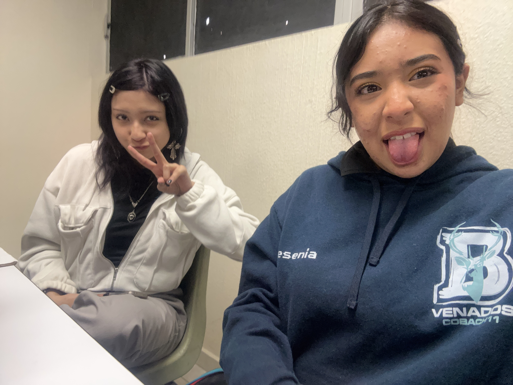

La verdad cuando entre a esta capacitacion no pense que ibamos a terminar haciendo paginas web porque al principio solo veiamos cosas de computadoras y conceptos basicos.
Me acuerdo que habia muchas guias sobre componentes de la computadora, tipos de memoria, hardware y software y sinceramente algunas si daban sueño porque estaban largas pero pues habia que hacerlas.
Despues empezamos a usar HTML y ahi comenzaron las practicas de paginas. Primero eran muy simples pero luego habia que agregar tablas, colores, imagenes, formularios y varias cosas mas.
Algo que si me acuerdo mucho era cuando una pagina no funcionaba y todos andaban viendo que tenia mal el codigo. A veces era solo porque faltaba cerrar una etiqueta o porque una palabra estaba mal escrita y uno duraba mucho buscando el error.
Tambien hubo momentos donde todos andaban haciendo trabajos al ultimo o preguntando porque no salia una imagen. Aunque a veces si era estresante, tambien habia momentos divertidos haciendo las practicas.
Siento que durante estos años aprendi mas cosas sobre computadoras y paginas web aunque todavia hay muchas cosas que siguen siendo dificiles.
Aunque hubo mucho estres y tareas largas siento que si aprendi cosas utiles durante esta capacitacion.

.